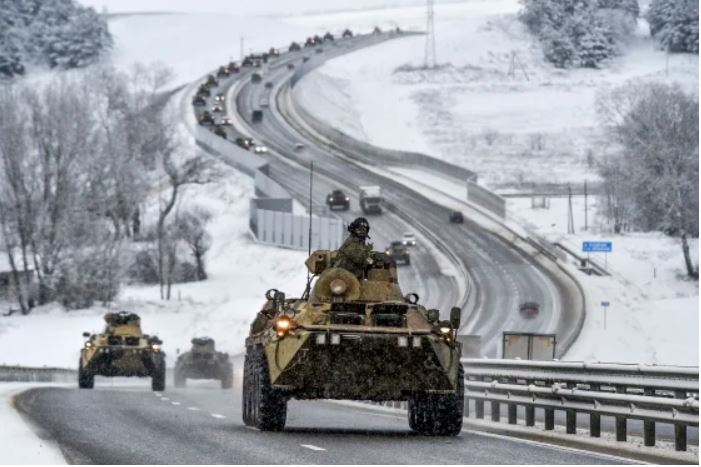
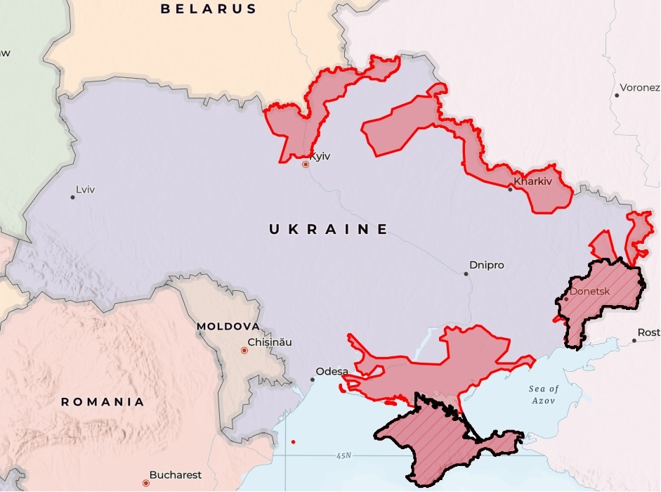
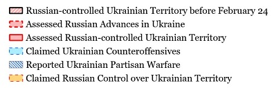
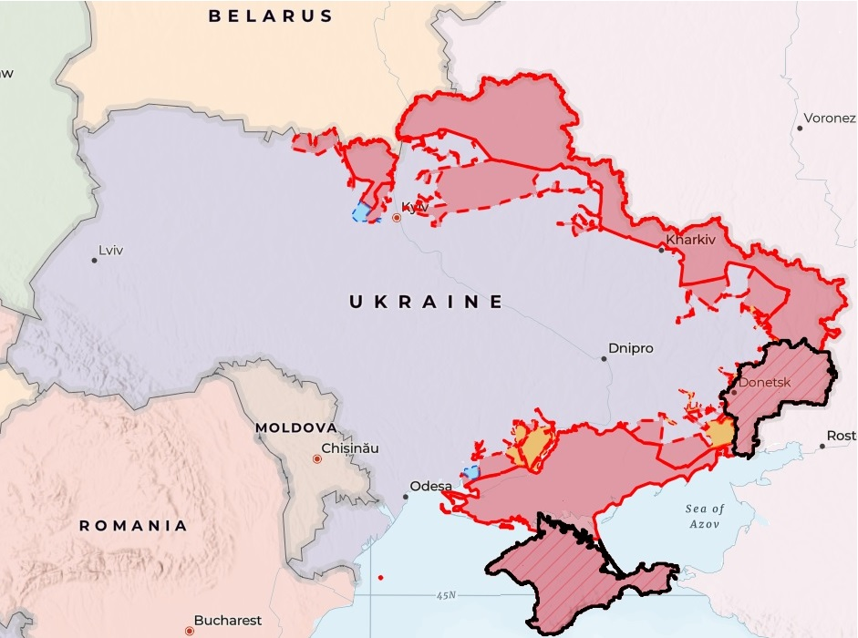

The Russian Invasion of Ukraine:
Casualties and Territorical Control
Before the invasion, Russia controlled approximately 41,000 square kilometers of Ukrainian territory in Crimea and parts of Donetsk and Luhansk. On February 24th, 2022 masses of Russian tanks and mechanized infantry swarmed into Ukraine from four fronts.
Casualties and Territorical Control
Scroll down to follow the history of the invasion.

February 28, 2022 (Day 5)
Russian forces intially advanced quickly, gaining close to 80,000 sq km of territory in just 5 days. They overran large parts of the Kherson and Kharkiv regions and threatened the suburbs of Kyiv. Prior to the invasion, only 42,000 sq km of Ukrainian territory in Crimea and the Donbas were under Russian control. Nevertheless, it also became apparent that logistical problems were complicating the Russian advance.


March 22, 2022 (Day 27)
Almost one month after the invasion, Russian advances had reached their peak, with 163,000 sq km under Moscow's control. Significant gains had been made on all fronts and Russian forces threatened to surround Kyiv and isolate it from Ukrainian forces in the east. However, there were signs that the offensive had culminated, and the following day Ukrainian forces began to push the invaders back from the front-lines of Kyiv.

April 08, 2022 (Day 44)
By April 8th, the Kyiv front had completely collapsed. Russia lost nearly 40% of its prior territorial gains. During an unorderly retreat, the invading forces withdrew into Russia and allied Belarus. In their absence, the extent of Russian brutality became apparent. There was copious evidence of indiscrimate civilian murder, rape and torture in the towns previously occupied around Kyiv.

August 31, 2022 (Day 189)
Over the next four months Moscow reoriented its offensive to the east. Through bitter, attritional warfare, Russia achieved incremental gains in the Luhansk region, while a small Ukrainian counter-offensive began to reclaim the outskirts of Kharkiv. For these limited gains, Russia paid a high price in blood -- casualties more than doubled from their level at the beginning of April. Over ten years of war in Afghanistan, Russia had suffered 15,000 dead and 35,000 wounded. Approximately the same numbers (47,900 killed or wounded) had been achieved after only 6 months in Ukraine.

September 11, 2022 (Day 200)
At the beginning of September, Ukraine initiated a surprise "lightning" counter-offensive that shattered Russian lines around Kharkiv and pushed them back over 50 km. Kyiv recaptured 4,000 km on the night of September 11th alone. Not only did this counter-offensive retake a large amount of territory, it also resulted in the capture of massive amounts of Russian equipment, which was left behind in a frantic and chaotic retreat. The shock of this overwhelming victory demoralized the Russian forces and prompted outrage in the ultra-nationalist Russian information space -- conditions that planted the seed of the internal rebellion that manifested itself the following year.

February 19, 2023 (Day 361)
Although the winter of 2022-2023, is considered a stalemate in the conflict, it was actually perhaps the most damaging period for the Russian campaign. Moscow initiated a Donbas offensive that came to be known as the "Battle for Bakhmut," which centered on the towns of Bakhmut, Soledar, and Vuhledar. Ukraine's entrenched defensive positions could only be breached by continuous waves infantry assaults. This period became a meat-grinder for Russian forces, especially for the paramilitary Wagner convict-recruits used as cannon-fodder. Although Moscow did eventually capture Bakhmut - which itself offered little strategic value - Russian casualties exploded, nearly tripling over this period.

June 12, 2023 (Day 474)
With Russian forces demoralized and depleted, Ukraine initiated a full-scale counter-offensive in early June. Having obtained a large influx of modern Western military equipment, Kyiv would now attempt to breach the heavily mined and reinforced Russian defenses in the south, with the goal of driving a wedge between the Russian forces in the East and those in Kherson. Although initial progress has been slow, as Ukrainian forces work their way through a sea of mine-fields, there are signs that Russian defenses are becoming increasingly brittle.
|
|